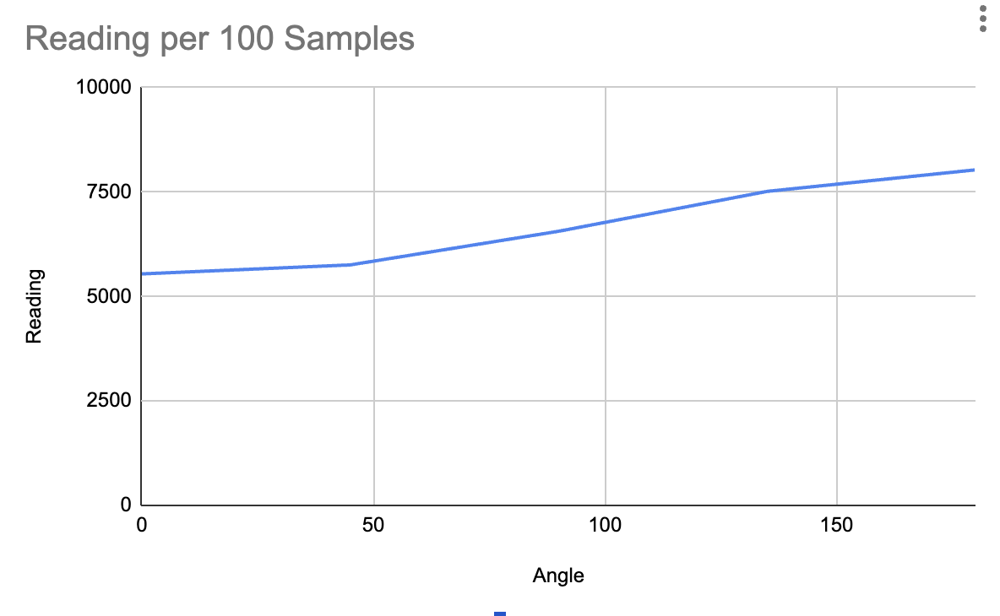
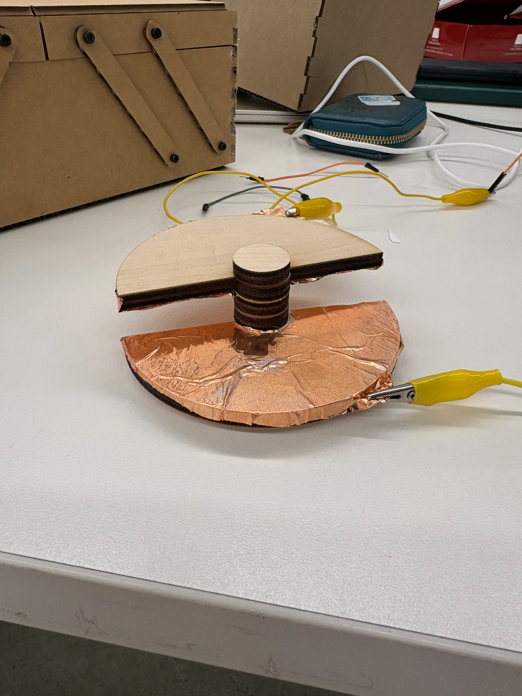
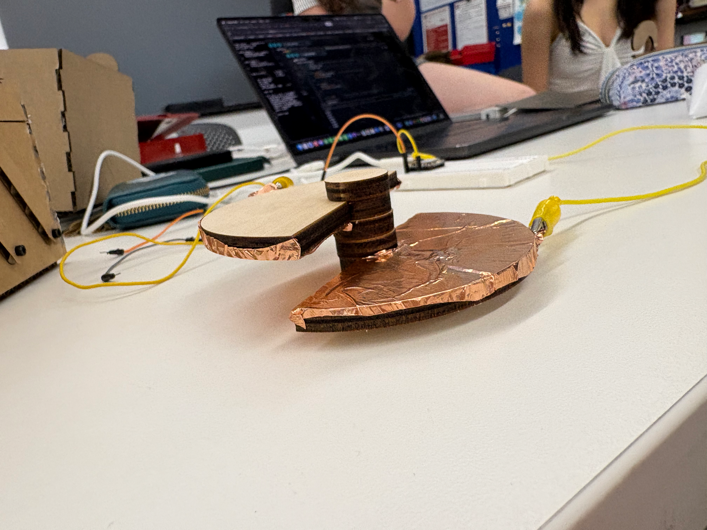
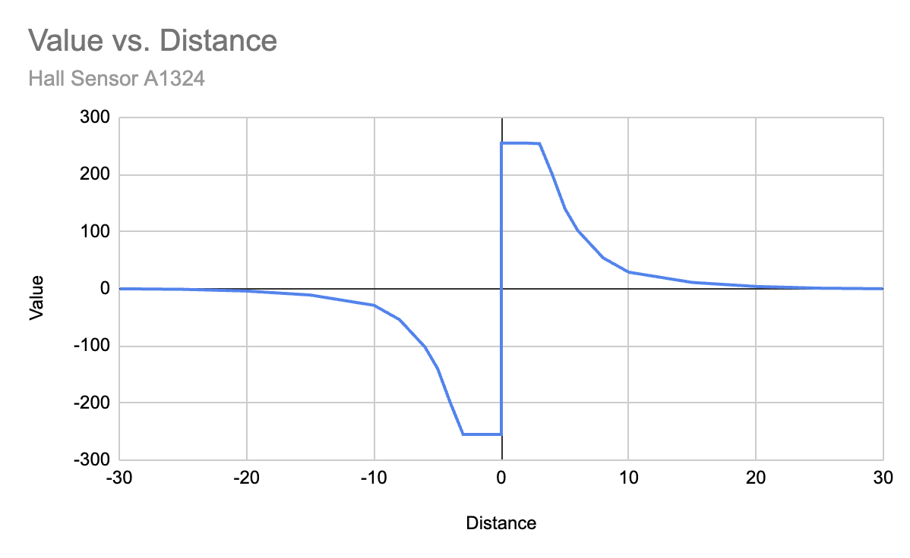
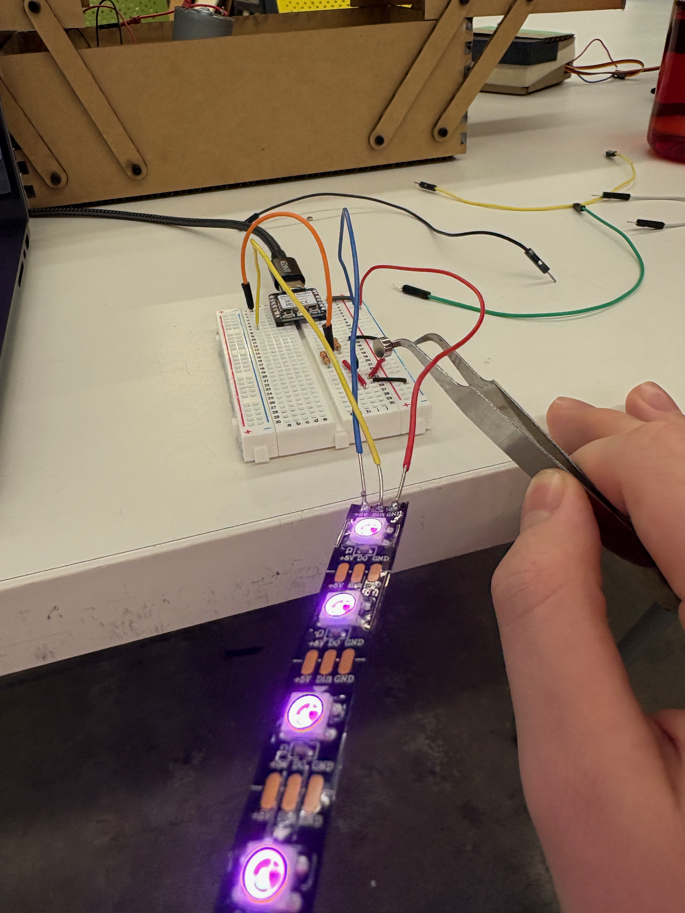
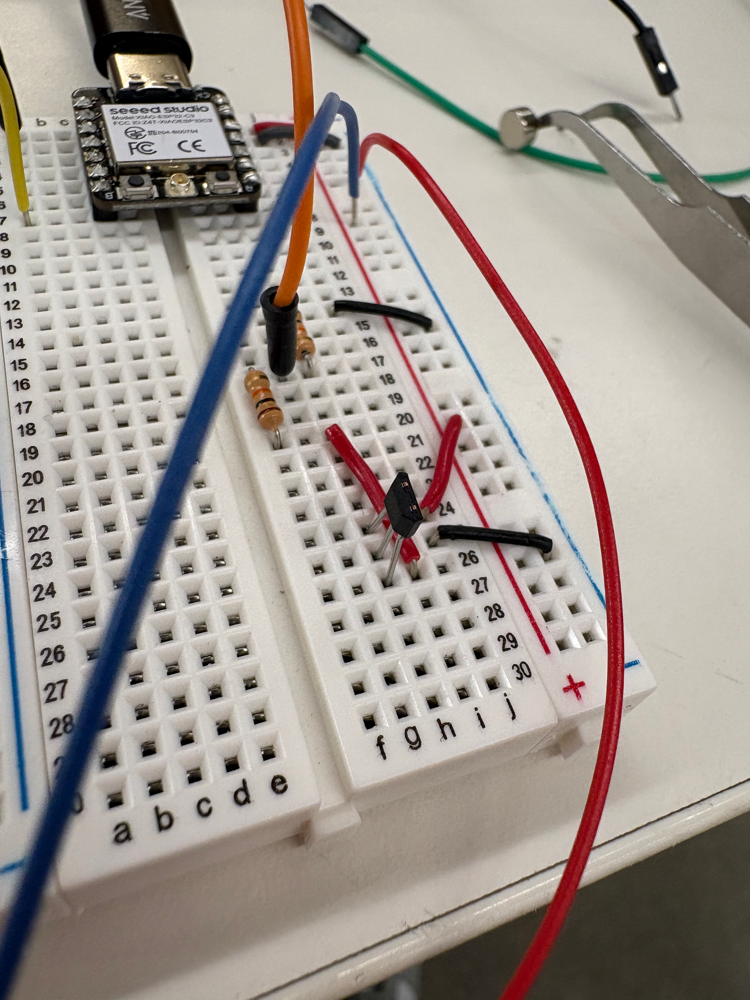

For our group's capacitive sensor assignment, we were assigned to create a capacitive sensor to sense rotation. My group was Sofia, Ethan, Emma, Arden, and I. To create the sensor, we used two copper foil coated semicircular discs that could rotate relative eachother to create different overlap percentages and therefore capacitance values. Because of the large air gap between the foil sheets, there was a pretty low signal to noise ratio and the overall data wasn't very useful as the noise was almost 40-50 degrees of equivalent rotation. However, we still did make a chart of the values, which shows some upward trend in the capacitance as the overlap percentage increases.



Here's the link to my capacitor reading code, based on the in class example with a few modifications so its easier to take data.
For the other sensor, I chose to use the A1394 Hall sensor, which is a 5V analog Hall sensor that can sense the strength of positive and negative magnetic fields. The sensor outputs 2.5V with no input, 5V with max magnetic field, and 0V with max negative magnetic field(other pole of magnet). I used a 2:1 voltage divider with two 10k resistors to get a maximum output of 2.5V to the Xiao so I wouldn't damage its inputs. In code, I mapped the input of 0-1790 to 0-255, and subtracted 1790(the value it read with no magnetic field) from the analogRead of the Hall sensor pin. That way, I got a range of 0-255 for positive fields, and 0 to (-255) for magnetic fields of the opposite pole. I then used a neopixel ARGB strip to output the strength of the magnetic field, with various brightnesses of magenta for positive magnetic fields and cyan for the negative strength ones. I specifically chose a hall effect sensor because I plan on using one as a homing device in my final project. I also made a chart of the values of the sensor which can be seen below. The nonlinear relation is because of the inverse square law, where magnetic fields get 4 times weaker when moved double the distance away. The sensor has a linear gain profile though, so the distance of the magnet to the sensor comes out as a nonlinear reading.



Here's the link to my hall sensor code.
I plan on CNC'ing a PCB prototype for my final project's main pcb design board, it has current sensing and uses A4950 H-Bridge motor drivers. It may be difficult to do though, since it has small pins and therefore is quite hard to manufacture.